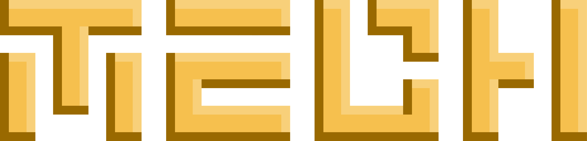
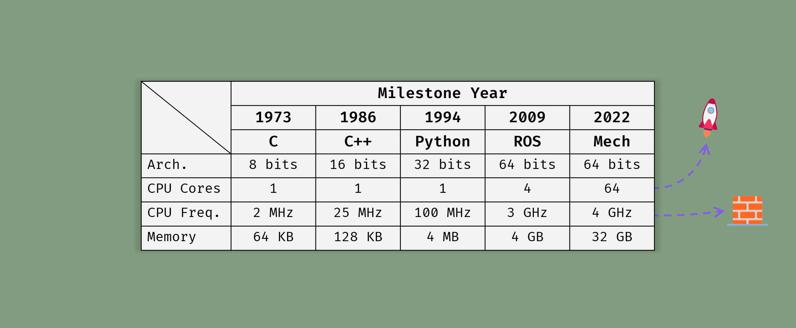
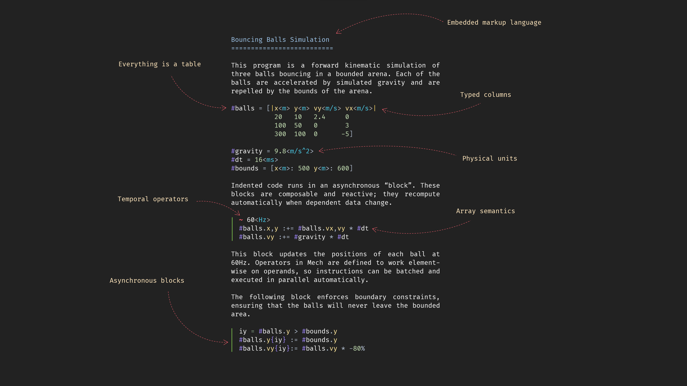
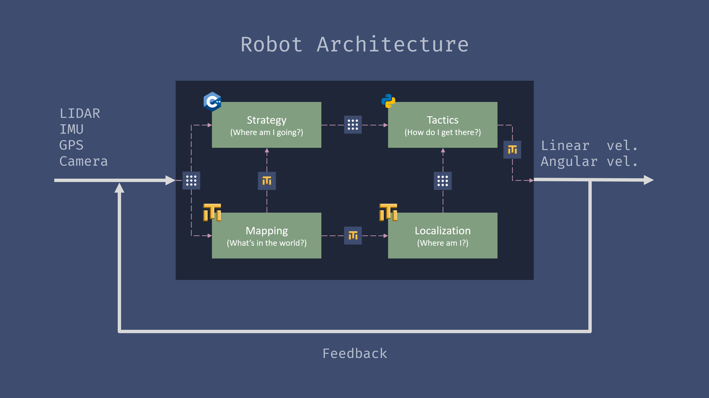
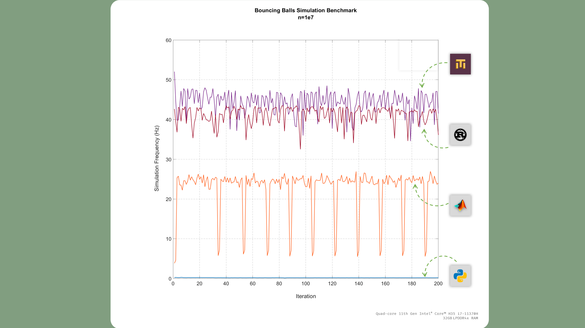
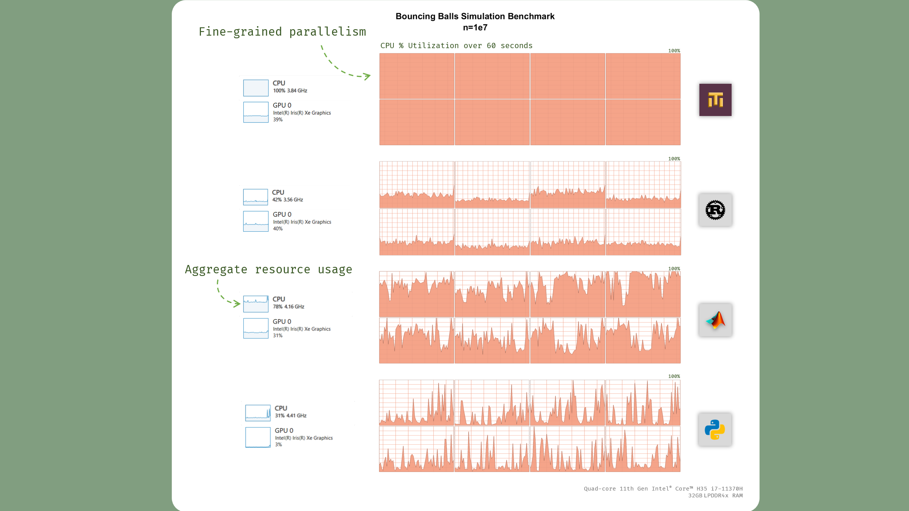
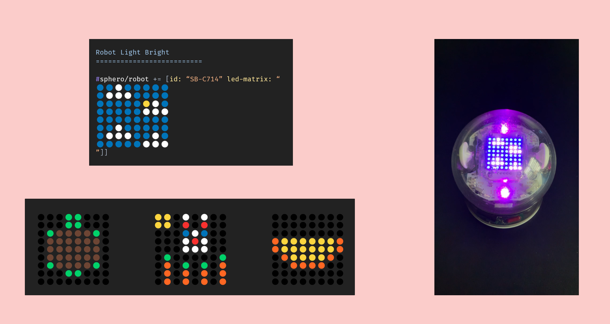

A programming language for developing data-driven, reactive systems like animations, games, and robots. Mech makes composing, transforming, and distributing data easy, allowing you to focus on the essential complexity of your project.
This page previews Mech v0.1-beta, to be released in October 2022. Get the code on
GitHub.
We're at an inflection point in the history of computing. Core counts are exploding while clock frequencies have stalled. Machines of the future will have high core counts, heterogenous architectures, and a menagerie of coprocessors to get work done. To take advantage of these resources, programming languages of the future should be built from the ground-up to support concurrent programming at the language-level.

Mech programs are distributed, parallel, and asynchronous. All operations are defined over tables of data. For a taste, here's some example code.

Mech is primarily designed to interoperate with typical robot software technologies like C++, Python, and the Robot Operating System (ROS). But it works well for any system architected as a feedback or open control loop that subscribes to external data sources. Besides robotics, games are another application domain where Mech fits well.

Mech is designed to be performant on workloads that can be highly parallelized, which is a feature of many robot applications. This means Mech can achieve performance on par with compiled languages, while still maintaining the expressivness of languages like Matlab and Python.

Mech achieves these speeds through dynamic dispatch and JIT compilation, as well as fine-grained parallelism achieved through highly vectorized datastructors and operators which take full advantage of multiple cores and threads.

Mech has an outreach component called
Forward Robotics, an extracurricular program that teaches middle school students the fundamentals of robotics engineering using Sphero robots and the Mech language. Here you can see the robot Light Bright event, and several Mech programs written by middle school students.

This has been a preview look at Mech v0.1-beta, which will be released in October 2022.
If you want to learn more or try Mech alpha, you can do so at the following links: